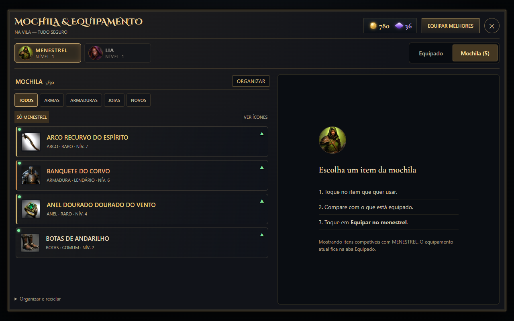
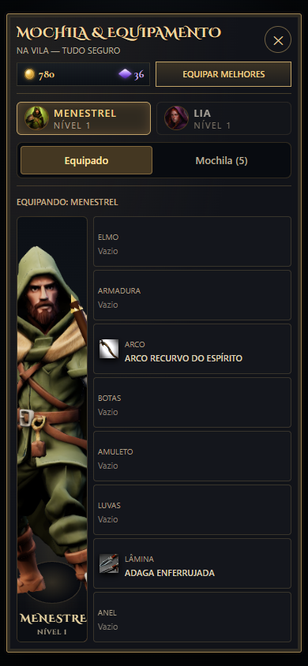
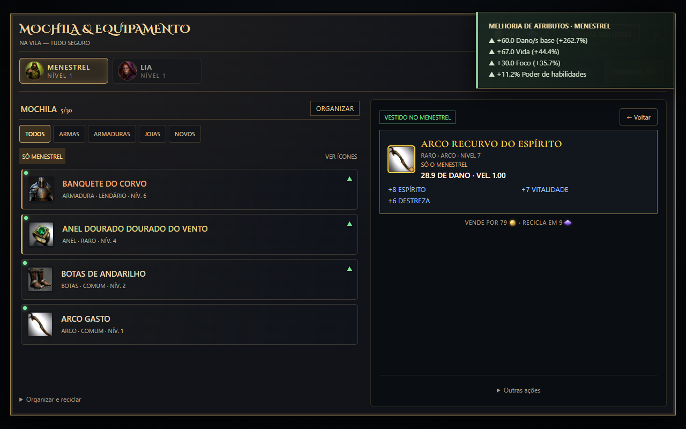

Corrigimos o retorno do bueiro e reorganizamos os equipamentos para deixar cada troca mais fácil de entender.
Volte ao andar que já alcançou
Chegou ao andar 2 e voltou à vila? A entrada agora oferece Continuar no andar 2. A retomada considera os andares visitados, além dos pontos liberados pelos chefes. Saves anteriores aproveitam o maior andar que já estava registrado.
Recomeçar no andar 1 continua sendo uma escolha separada. Normal e Inferno guardam progressos próprios; dungeons concluídas permitem uma nova tentativa.
Equipado e Mochila: cada coisa em seu lugar
Escolha o personagem no alto e alterne entre duas áreas. Equipado mostra o que ele veste, com nomes por espaço. Mochila mostra seus itens, com filtros e comparação ao selecionar. O botão de equipar fica em destaque; ações como vender ou reciclar estão em Outras ações.

Escolha um item, compare e equipe. Itens compatíveis com o personagem aparecem por padrão.

Os espaços vazios e os itens vestidos ficam identificados também no celular.
Veja o ganho ao trocar de equipamento
Um aviso de cinco segundos mostra as melhorias calculadas, como dano por segundo, vida, armadura e foco. Ele continua visível ao fechar a mochila e funciona também ao equipar melhores ou reforjar com sucesso.

Valores antes/depois dos atributos. Dano base não inclui crítico, resistência do alvo ou efeitos condicionais.
26 scripts de regressão e revisão em três tamanhos de tela. Capturas das interfaces reais na bancada de testes. Toque e desempenho no aparelho físico ainda precisam de avaliação.